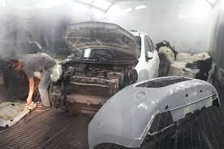
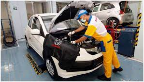

Service Besar
Adapun beberapa komponen yang biasanya akan diperiksa atau diganti jika kondisinya sudah tak layak, meliputi:
- Oli mesin, transmisi hingga gardan dengan yang baru
- Filter Oli turut diganti pula.
- Pengecekan Kopling
- Pemeriksaan Kondisi Rem Mobil
- Melihat kondisi sistem bahan bakar


Lihat Gambar Lainnya